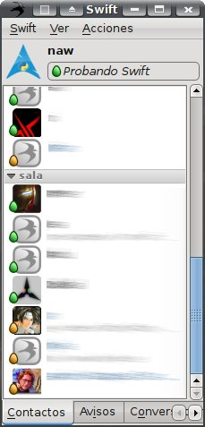
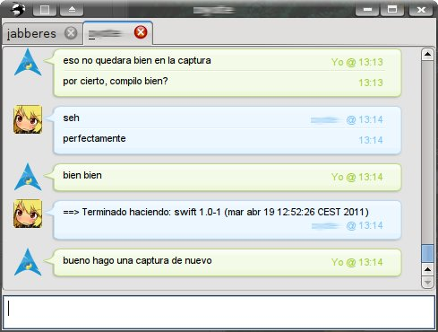

Mensajería Instantánea Libre
El Libro Jabber
Navegación del libro
Navegación
Web JabberES
Comentarios: 2694
Nodos: 1177
Nuestro servidor Jabber


Enlázanos

Cópianos

JabberEs - mensajería instantánea libre
- Con Jabber puedes enviar mensajes a usuarios desconectados, conectar a tu cuenta desde varios sitios al mismo tiempo, conectar a otras redes (como MSN, AIM o Yahoo!), poner tu estado en una web y mucho más...
- Los servidores Jabber de todo el mundo conforman una federación de mensajería instantánea en la que todo el mundo puede hablar entre sí sin restricción alguna.
- Jabber está basado en XMPP, un protocolo extensible, abierto y estándar basado en XML para el intercambio en tiempo real de mensajes y presencia entre dos puntos en Internet.
- JabberEs ofrece información sobre Jabber en castellano, y diversos servicios gratuitos incluyendo un servidor Jabber público y un servicio de salas de charla.
Contenido archivado
El contenido de la web se encuentra archivado y no se podrá crear nuevo contenido. Más información.
Caída del servidor y problemas para iniciar sesión (04-09-11) [Solucionado]
Enviado por naw el 3 September, 2011 - 23:30.Hacia las 00:04 CEST del día 4 (22:04 del día 3 UTC) hubo una caída del servidor que se solucionó en unos minutos. Se aprovecho para actualizar el servidor, pero algunos usuarios están experimentando problemas para iniciar sesión. Intentaremos solucionarlo lo más pronto posible.
Nuevos prosody, jabberd2 y ejabberd corrigen grave vulnerabilidad
Enviado por badlop el 1 June, 2011 - 18:07.Se ha descubierto un problema en varios servidores Jabber/XMPP que permite realizar un ataque de denegación de servicio (DoS).
Si eres administrador de ejabberd, jabberd2 o prosody, deberías actualizarlo cuanto antes.
Se han publicado estas versiones corregidas:
Caída del servidor (29-05-2011) [Solucionado]
Enviado por naw el 29 May, 2011 - 17:55.Actualización El problema ya está solucionado.
Hace unos minutos, ha habido una caída en el servidor que Jabber/XMPP. Lo solucionaremos lo más rapidamente posible.
Lamentamos las molestias que os podamos causar.
Por último, aprovechar para recordaros que, en caso de caídas, existe la sala de emergencias jabberes@conference.jabber.org (a la que también podéis acceder vía web desde Jappix o Speeqe) en la que podréis obtener algo más de información.
Jueves 19 de mayo de 2011, Open Discussion Day
Enviado por naw el 18 May, 2011 - 20:10.El próximo jueves 19 de mayo se celebra la sexta edición del Open Discussion Day. Este día está dedicado a la promoción de sistemas de comunicación abiertos. La idea es no usar ningún sistema de comunicación cerrado (MSN, Yahoo!, AIM) durante todo el día.
Publicado Spark 2.6.0
Enviado por naw el 9 May, 2011 - 16:45.Se acaba de lanzar la versión 2.6.0 de Spark, un cliente Jabber/XMPP orientado a empresas y organizaciones escrito por los desarrolladores del servidor Openfire.
Entre las mejoras de esta versión, podemos destacar:
- Eliminación de bibliotecas comerciales
- Cambio a una licencia Apache 2.0
- Introducción de varios skins
- Mejoras en la interfaz
- Soporte de modo invisible
- Mejoras en el soporte de salas
- Posibilidad de especificar datos por defecto (para empresas)
- Uso de la nueva versión de la biblioteca Smack
- Reescritura de los mecanismos de conexión
- Otras mejoras técnicas
Se ha publicado la primera versión de Swift
Enviado por naw el 19 April, 2011 - 10:27.Se acaba de publicar la primera versión de Swift. Swift es un nuevo cliente creado con el objetivo de ser sencillo de usar para el usuario final, concentrándose en los usos más habituales de un programa de este tipo y en "hacer lo correcto" sin requerir configuración.


|
2003-2010 © JabberES
Jabber® marca registrada de Jabber, Inc. |


|